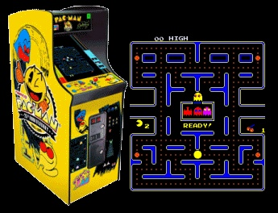
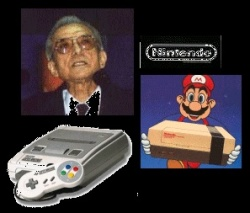
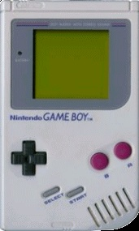
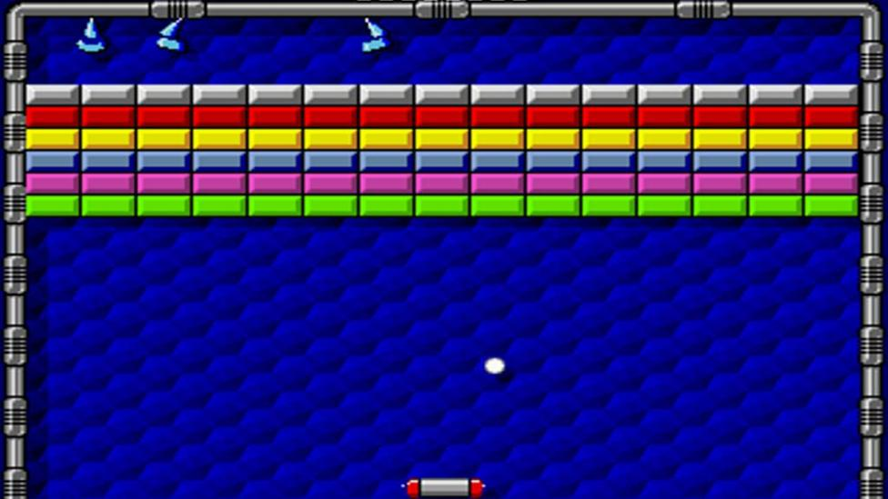
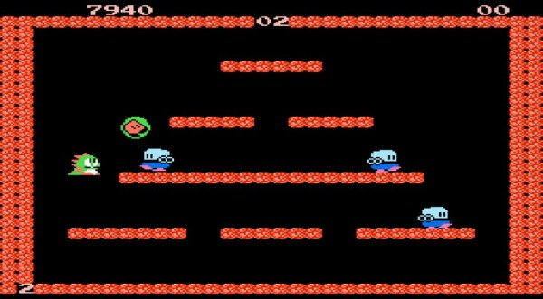
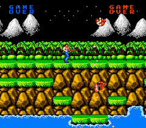
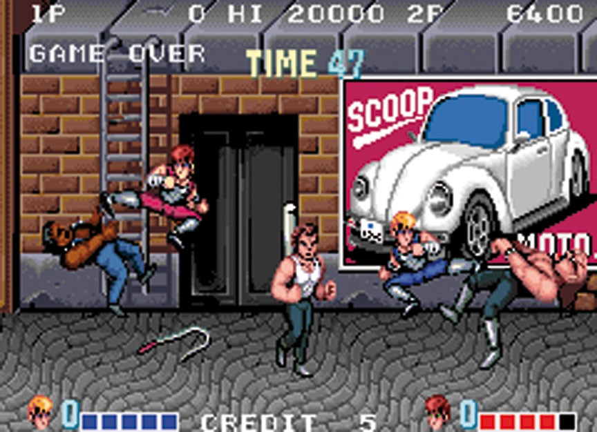
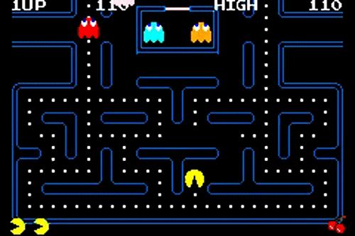

Un poco de historia...
1980-1989: La década de los 8 bits
Los años 80 comenzaron con un fuerte crecimiento en el sector del videojuego alentado por la popularidad de los salones de máquinas recreativas y de las primeras videoconsolas aparecidas durante la década de los 70. Durante estos años destacan sistemas como Oddyssey 2 (Phillips), Intellivision (Mattel), Colecovision (Coleco), Atari 5200, Commodore 64, Turbografx (NEC). Por otro lado en las máquinas recreativas triunfaron juegos como el famoso Pacman (Namco), Battle Zone (Atari), Pole Position (Namco), Tron (Midway) o Zaxxon (Sega).

El negocio asociado a esta nueva industria alcanzó grandes cosas en estos primeros años de los 80, pero sin embargo, en 1983 comenzó la llamada crisis del videojuego, afectando principalmente a Estados Unidos y Canadá, y que no llegaría a su fin hasta 1985. Japón apostó por el mundo de las consolas con el éxito de la Famicom (llamada en occidente como Nintendo Entertainment System), lanzada por Nintendo en 1983 mientras en Europa se decantaba por los microordenadores como el Commodore 64 o el Spectrum.

A la salida de su particular crisis los norteamericanos continuaron la senda abierta por los japoneses y adoptaron la NES como principal sistema de videojuegos. A lo largo de la década fueron apareciendo nuevos sistemas domésticos como la Master System (Sega), el Amiga (Commodore) y el 7800 (Atari) con juegos hoy en día considerados clásicos como el Tetris. A finales de los 80 comenzaron a aparecer las consolas de 16 bits como la Mega Drive de Sega y los microordenadores fueron lentamente sustituidos por las computadoras personales basadas en arquitecturas de IBM.

En 1985 apareció Super Mario Bros, que supuso un punto de inflexión en el desarrollo de los juegos electrónicos, ya que la mayoría de los juegos anteriores sólo contenían unas pocas pantallas que se repetían en un bucle y el objetivo simplemente era hacer una alta puntuación. El juego desarrollado por Nintendo supuso un estallido de creatividad. Por primera vez teníamos un objetivo y un final en un videojuego. En los años posteriores otras compañías emularon su estilo de juego.
En el campo de las recreativas, destacaron videojuegos como Defender, Rally-X, Dig Dug, Bubble Bobble, Gauntlet, Out Run o Shinobi además de producirse un cambio en cuanto a la nacionalidad de los juegos pasando a ser Japón la mayor productora.

Otra rama de los videojuegos que creció con fuerza fue la de los videojuegos portátiles. Estos comenzaron a principios de los 70 con los primeros juegos completamente electrónicos lanzados por Mattel, los cuales difícilmente podían considerarse como videojuegos, y fueron creciendo en popularidad gracias a conversiones de recreativas como las realizadas por Coleco o adictivos microjuegos como las Game & Watch de Nintendo. La evolución definitiva de las portátiles como plataformas de videojuego llegó en 1989 con el lanzamiento de la Game Boy (Nintendo).
Ya hemos hablado un poco sobre su origen
Juegos que marcaron epoca
Arkanoid
Para participar en cada parada no es necesario presentarse siempre con el mismo equipo. El objetivo es que compitáis y disfrutéis del Circuito Tormenta sin necesidad de pertenecer a un conjunto fijo; con todo lo que eso conlleva. Por ello, habrá un sistema de puntuación por equipos y otro individual. De esta forma, no debéis preocuparos de tener siempre a los mismos compañeros para seguir sumando puntos a vuestro casillero. Sin embargo, como todos sabemos, siempre es más sencillo conseguir los objetivos con un equipo bien compenetrado.
Bubble Bobble
En 1986 llegó a las recreativas, de la mano de Taito, este clásico de las plataformas en el que teníamos que superar 100 niveles encarnado a un dragón que podía lanzar burbujas para atrapar a sus enemigos. ¡Y lo mejor es que podíamos jugar a Bubble Bobble junto con un amigo en cooperativo!
Contra
Otro clásico de las recreativas, pero esta vez con una temática muy diferente. En 1987 los chicos de Konami nos ofrecieron Contra, una aventura de acción con desplazamiento lateral para hasta dos jugadores que más tarde acabaría llegando también a NES y MSX 2 gracias a su gran calidad y popularidad. Como curiosidad, el año pasado pudimos jugar una versión de Contra inspirada en el universo de Star Wars y protagonizada por Chewbacca.
Double DragonL
Otra aventura de acción que llegó en 1987 a los salones recreativos. Technos Japan y Taito nos trajeron este Beat'em up que crearía escuela. Todo un clásico que nos cautivó por sus mecánicas y por poder patear traseros junto a un amigo. Por supuesto, Double Dragon su éxito en los salones también hizo que apareciese en un buen número de consolas domésticas y portátiles más tarde.
Pac-Man
¿Quién no recuerda el clásico Comecocos? En 1980 si un salón recreativo no tenía la máquina de Pac-Man, no era un salón de verdad. Namco creó uno de los videojuegos más queridos por los usuarios y su huella está presente aún a día de hoy. ¡Si hasta Pac-Man y su creador han aparecido recientemente en la película Pixels!
